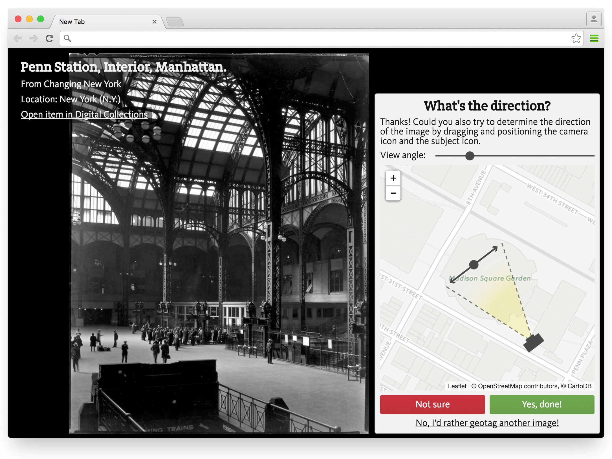
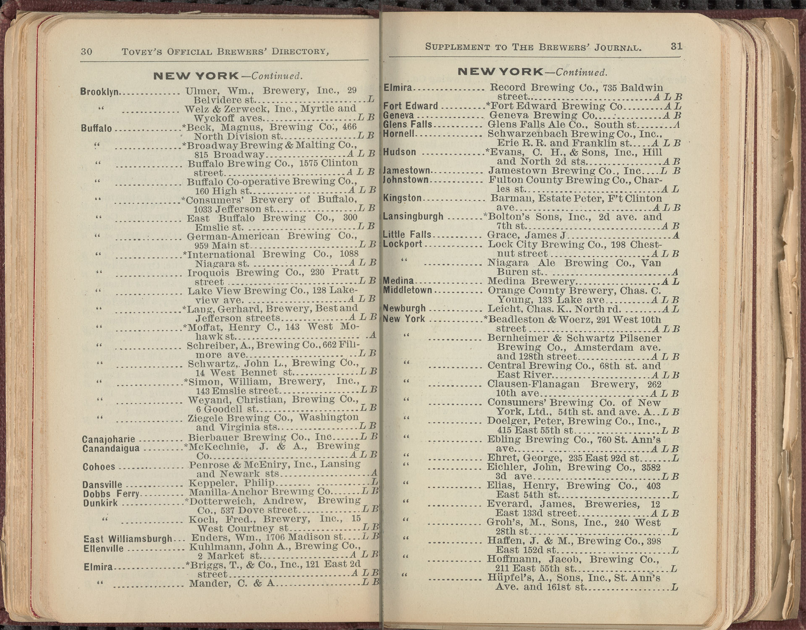

NYPL Labs
NYC Space/Time Directory
üèõüöÄüíæ
NYPL Labs, maps, buildings, addresses: Mauricio Giraldo!
NYC Space/Time Directory
How did my street look in the 1920s?
On which cemetery are my ancestors buried?
Do you have maps of my house around 1900?
Our search engine:
The NYPL has the materials (and librarians!) you need to answer those questions - however, this is not so easy...
In comes:
NYC Space/Time Directory!
Combine NYPL's collections and data — through space and time!
NYC Space/Time Directory = NYPL data + external datasets + databases +
APIs + search + geo + RDF + open source + digitization + crowdsourcing + community
Goals: open data, plain text files, for everyone to download
Goals: APIs, open source, search tools, user interfaces
New crowdsourcing tools — geotag our collection

Example: who lived where in 1854?
Georectified maps + Building Inspector +
OCR'd city directory = graph of addresses & people
One database with all NYPL Space/Time data
Example: maps by decade
More examples!

Thanks!